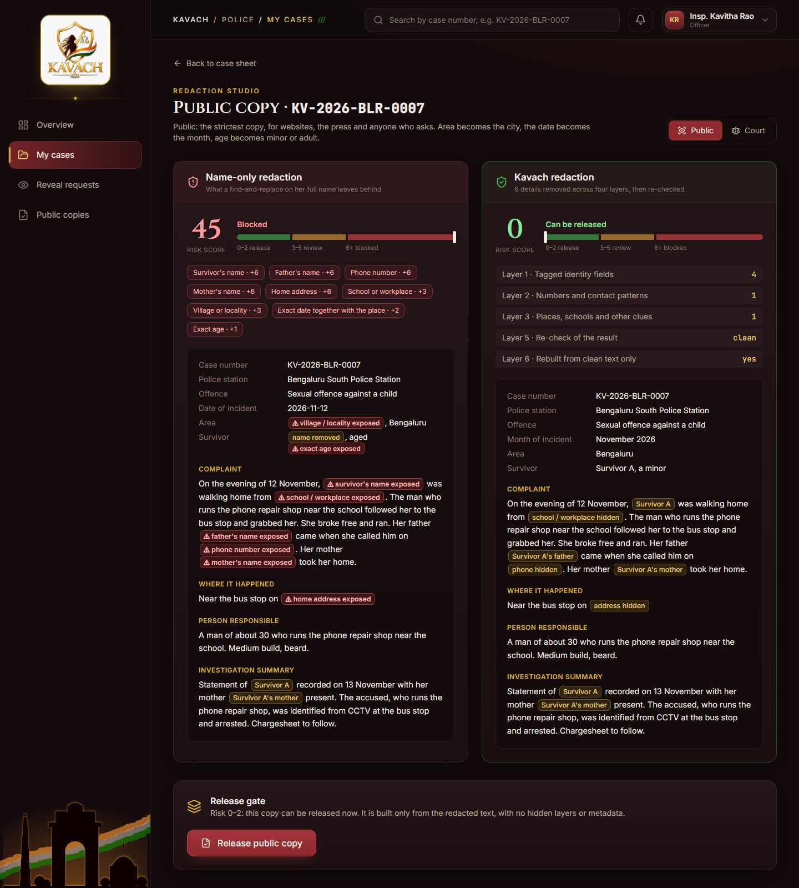
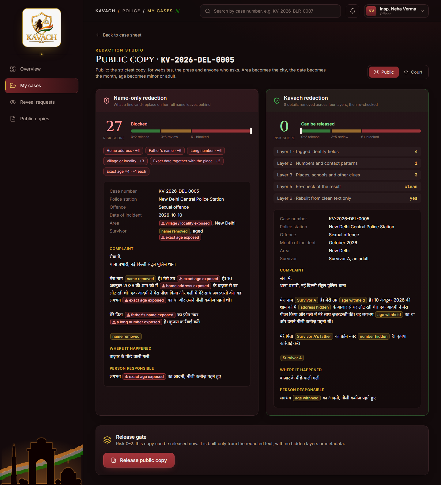
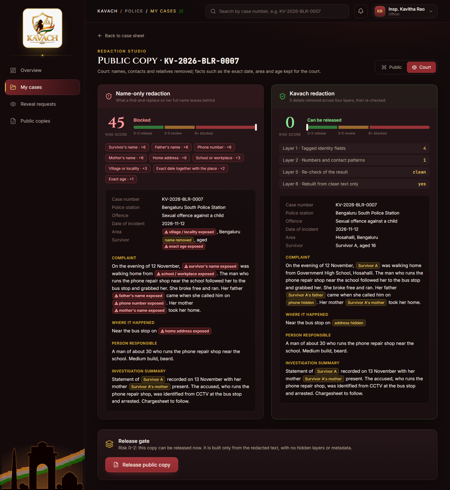
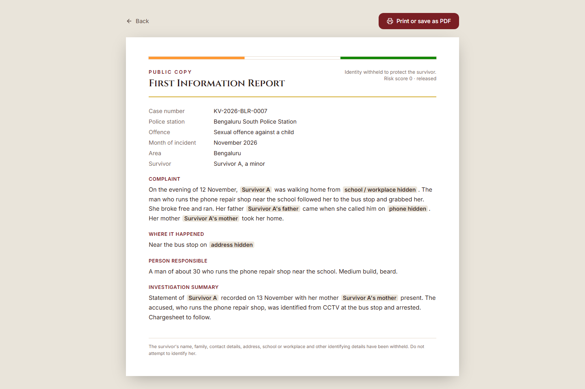
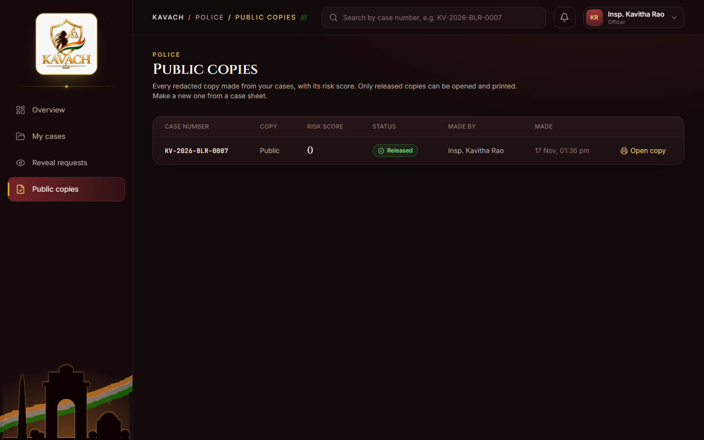

Kavach can now produce a public copy of a case that is safe to release. The Redaction Studio puts the usual name-only redaction next to Kavach's six-layer redaction, scores both, and only lets a copy out if the score is low. On the English demo case the risk drops from 45 to 0; on the Hindi case from 27 to 0. The released PDF, copied out character by character, contains none of the survivor's details.
Redaction Studio


The six layers
| # | Layer | What it catches |
|---|---|---|
| 1 | Tagged identity fields | Everything she typed into the form, with parts and variants: "Kavya" from "Kavya Rao", the street from her address, the school name |
| 2 | Numbers and contact patterns | Phone, Aadhaar, PAN, email, pin code, vehicle numbers, dates of birth, and any run of 8+ digits |
| 3 | Places, schools, other clues | Schools and workplaces, villages and localities (English, Hindi, Kannada), caste or community, a parent's job, exact ages |
| 4 | Relatives and relations | "Her brother Arun" loses the name; "her uncle Ravi" and "her tutor" become "a relative" and "a person known to her" (in the text's own language) |
| 5 | Risk score | The same detector runs again over the result; whatever it still finds is scored. A place and a school together count double. |
| 6 | Rebuild | The copy is assembled only from the redacted text, so there is no hidden text layer, annotation or attachment to leak |
Risk score and release gate
| Left in the copy | Points | Left in the copy | Points |
|---|---|---|---|
| Name, relative's name, phone, address, ID, long number | 6 each | Parent's job, relation to the accused, exact date with the place | 2 each |
| School, locality, caste, pin code, vehicle, date of birth | 3 each | Exact age | 1 |
0–2: released. 3–5: a supervisor must review it. 6 or more: blocked; its text is never even sent to the screen.
Copy profiles

The public copy goes further: area becomes the city ("Bengaluru"), the date becomes the month ("November 2026") and age becomes "a minor" or "an adult".
The released copy


Copy-paste test. The copy page was printed to PDF exactly as "Save as PDF" does, and every character was extracted with a PDF library. None of 10 identity values (her name, surname, father's and mother's names, phone, school, locality, pin code, street, age) appear. The PDF has no annotations or attachments, and its metadata holds only a title ("Public copy KV-2026-BLR-0007"), the creation date and the browser's name: no author or user.
Fixed: the first print included the on-screen "Public copy released" message; messages are now hidden when printing.
Checks run
| Check | Result | Status |
|---|---|---|
| Name-only vs Kavach on both Bengaluru cases | 45 and 24 (blocked) vs 0 and 0 (released) | Pass |
| Hindi case in the Studio | 27 (blocked) vs 0 (released) | Pass |
| Preview and stored copy searched for 11 identity values | None present; leaks are sent as labels only | Pass |
| Engine on extra phrasings | "Her uncle Ravi Kumar", "my father … is a tailor", "Mr. Prakash Shetty", Hindi and Kannada schools, relations and ages all handled; residual 0 | Pass |
| Access | Another officer cannot preview, open or approve; only the station's supervisor can review | Pass |
| Review path | Medium-risk copy appears for the supervisor, is released on approval and cannot be decided twice | Pass |
| Blocked copy | Only its findings are returned, never its text | Pass |
| Released PDF text and metadata | No identity values, no annotations, no author | Pass |
Fixed during the phase: "Her uncle …" at the start of a sentence was missed; a Kannada relation was generalised in English; the Hindi and Kannada words for "I" were swallowed into school names; and the generic word "circle" from a locality name was being hidden everywhere.
Not done yet, and limits
- Detection is rule-based, not a trained model. Nicknames, misspellings and places it has no pattern for can slip through; that is why the result is re-scored and a supervisor reviews medium risk. We will not claim zero risk.
- The demo cases all redact to 0, so the review path was tested with inserted medium-risk and blocked copies rather than a natural one.
- Dates inside the complaint text are kept as case facts; the header shows only the month, and the place they could be paired with is removed.
- Over-redaction happens: the accused's age is also withheld, and a locality that is part of her address shows as "address hidden".
- "Print or save as PDF" uses the browser; the PDF's Creator field is the browser's name.
- Measured recall on a larger held-out synthetic set is part of Phase 7's run-through, not this phase.
Next: Phase 6, security and honeypot
Arm the decoys: canary case records that lock an account the moment they are opened, decoy endpoints such as /api/admin/export-all and /backup.sql, honey credentials in a planted config file, wrong-case attempts turned into alerts, per-user rate limits, and the live security dashboard with alerts, locked accounts and the audit log.